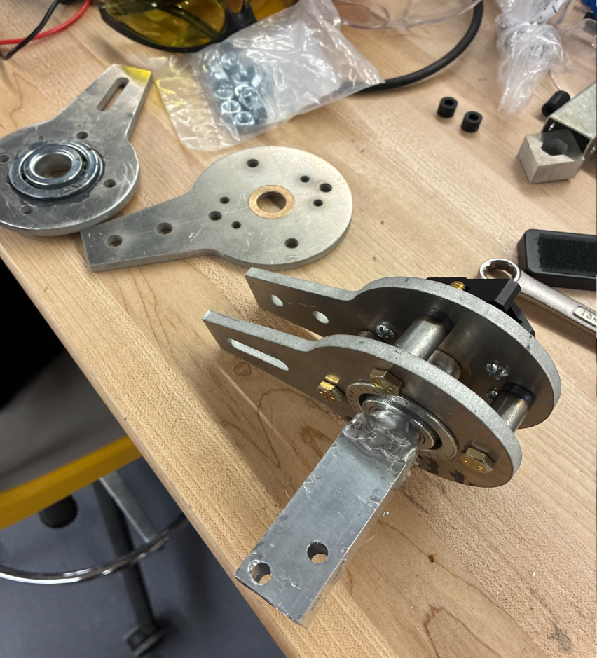
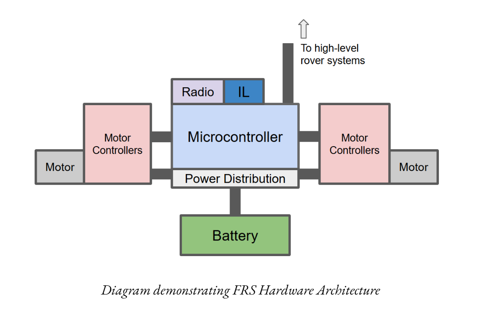
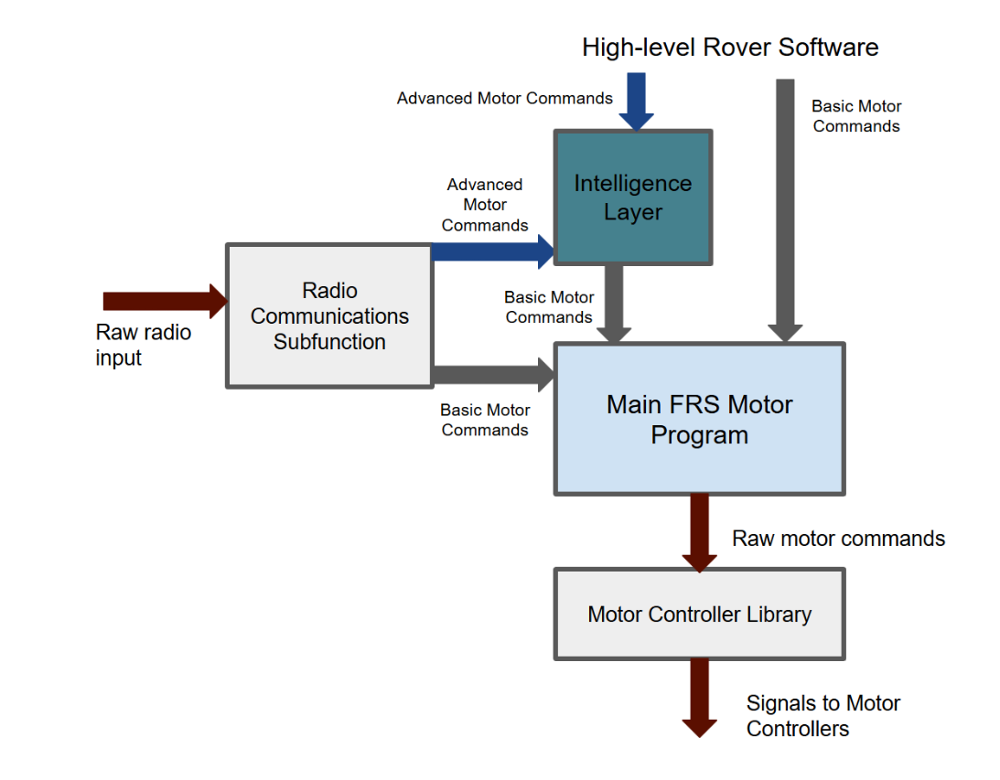

LUSI
Lehigh University Mars Rover Competition Team
2026 Driveline, Chassis and Suspension Lead
The Lehigh University Space Initiative (LUSI) is an engineering challenge team (such as Formula SAE or Baja) with a robotics focus. We compete in the University Rover Competition (URC) against many other universities to design a rover capable of autonomously completing sample return, science, and repair tasks in the Utah desert. I joined LUSI at a difficult time for the team—much of our engineering knowledge was concentrated in a few senior members, so any graduation was a huge blow. Many projects were left incomplete, and we struggled with mechanical reliability. However, LUSI remains a fantastic educational experience, the only engineering club to offer triple exposure to mechanical, electrical, and software development. The community of really committed members is wonderful, and the team is closely knit.
I initially joined the Driveline, Chassis, and Suspension (DCS) team because it tackles some of the rover's most critical mechanical challenges. During my first year, my focus was on structural integrity and practical experimentation to get our hardware competition-ready.
Internal Chassis Structure: I designed and 3D-printed the internal webbing of the chassis—essentially the rover's skeleton—to securely mount our circuit boards, batteries, and E-stop in their precise positions.
Wheel Tread Optimization: To determine the most effective 3D-printed wheel design, I built a testbed filled with dirt and rocks to approximate Martian terrain. Using force meters and a servo motor, I tested the slip thresholds of various tread patterns in transverse and longitudinal directions, allowing me to calculate the ideal design.
Suspension Stabilization: Our rocker-bogie suspension had a critical flaw where the rockers would "kick" during turns, effectively preventing the rover from steering. I intervened by widening the wheelbase to enable skid steering and designed a custom spring system. This applied continuous pressure to the bogies, allowing the suspension to articulate over obstacles while preventing it from flopping under inertial forces.
Soil Analysis Delivery System: We struggled to transport extracted dirt from the soil drill into the chemical analysis chambers. To solve this, I built a ramp equipped with a vibrating motor. This fluidized the soil, ensuring it diverted smoothly into the correct chambers for spectrometer analysis and photography.
Antenna Mount: I designed a heavy-duty, folding mount to support our large antenna, ensuring it remained durable while strictly adhering to the competition's size constraints.
When I became the Driveline, Chassis, and Suspension team lead, I set out to improve both LUSI's technology and human capital management.
The First All-Metal Suspension: Historically, the team relied heavily on 3D-printed structural parts that were prone to shaking loose or breaking. I designed LUSI’s first entirely metal, welded suspension. To execute this, I trained my team members on both CNC milling and welding equipment. We're also in the process of developing training to ensure this knowledge stays with the team.
Crab-Style Steering & Weight Optimization: To solve our past struggles with tight turns, I led the transition to a crab-style steering setup. Recognizing this would push us over the weight limit, I conducted testing that proved we could safely reduce the rover from six wheels to four (two per side). We maintained necessary traction while vastly improving maneuverability.
Robust Drive Mechanics: Designing the crab steering was mechanically complex. I encased the main motor shaft in a thicker metal outer shaft to absorb the physical forces of the wheels. By placing it in double shear and using a dual-bearing system—a radial bearing to prevent inward/outward canting and a thrust bearing to support the rover's full weight—we created a highly durable drive system that allowed the rover to parallel park in tight spaces.

The turning mechanism being assembled. Complete welded version visible in foregound, thrust bearing inside cnc-machined parts in background.
Mitigating Technical Debt: The Field Rover System (FRS)
Despite our mechanical improvements, the structural issues of the team remained. The concentration of knowledge meant that graduating seniors left behind "technical debt"—undocumented software and unfinished hardware—forcing the team to start over each year. Furthermore, mechanical teams were often delayed because they could not test their designs until the electrical and software teams finished their respective overhauls.
To break this cycle, I began developing the Field Rover System (FRS) to enforce high modularity and enable more design cycles.
Analog Test Platform: We are building a dedicated test rover out of 80/20 aluminum extrusion. It is easily reconfigurable, allowing the mechanical team to test dozens of suspension geometries and log over 100 hours of drive time entirely independent of the final competition rover's development.
Reliable Low-Level Architecture: The FRS operates as an independent, low-level architecture utilizing a highly stable STM32 microcontroller and a 6-meter band ham radio (utilizing my personal ham radio license) to ensure constant, reliable communication at great distances.
System-agnostic Modularity Our power distribution board handles both 12V and 24V, and the software separates motor controller libraries from the main codebase. If future teams change the motors, they simply swap the library—not the entire code.

FRS Hardware Flowchart. Integrated systems share borders, while systems linked by lines are independent enough to be modular/swappableThe Intelligence Layer: Eventually, we will build an "Intelligence Layer" on top of the FRS. By integrating onboard GPS and accelerometers, the rover will be able to interpret nuanced commands (e.g., "drive one meter forward") and use self-healing algorithms to automatically compensate in real-time if a motor underperforms.

FRS Software flowchart, demonstrating the flow of different level commands and the modularity of the software architecture.By establishing this modular baseline, future LUSI teams won't have to reinvent the wheel. They will inherit a reliable foundation that allows them to start driving immediately and spend their year iterating toward perfection.